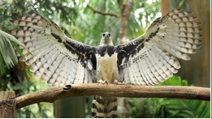
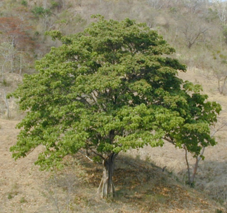
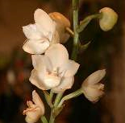
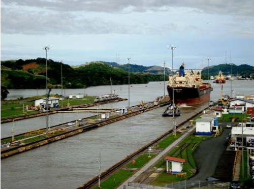
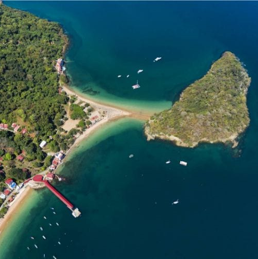

Información
Historia
El istmo de Panamá fue visitado por primera vez por los conquistadores españoles durante la expedición del escribano de Triana, Rodrigo de Bastidas, en 1501. Bastidas navegó la costa caribeña de la actual provincia de Colón y las islas del archipiélago de la Comarca de San Blas. Debido a la mala condición de sus barcos, Bastidas suspendió su expedición y regresó a España.
Simbolos Patrios

Ave Nacional

Árbol Nacional

Flor Nacional

Bandera Nacional
Extensión Territorial
75,517 km²
Departamentos
- Coclé (capital Penonomé)
- Colón (capital Colón)
- Chiriquí (capital David).
- Los Santos (capital La Villa de Los Santos).
- Panamá (capital Panamá).
- Veraguas (capital San Francisco de la Montaña).
Lugares Turisticos

Canal de Panamá (Provincia de Panamá).
